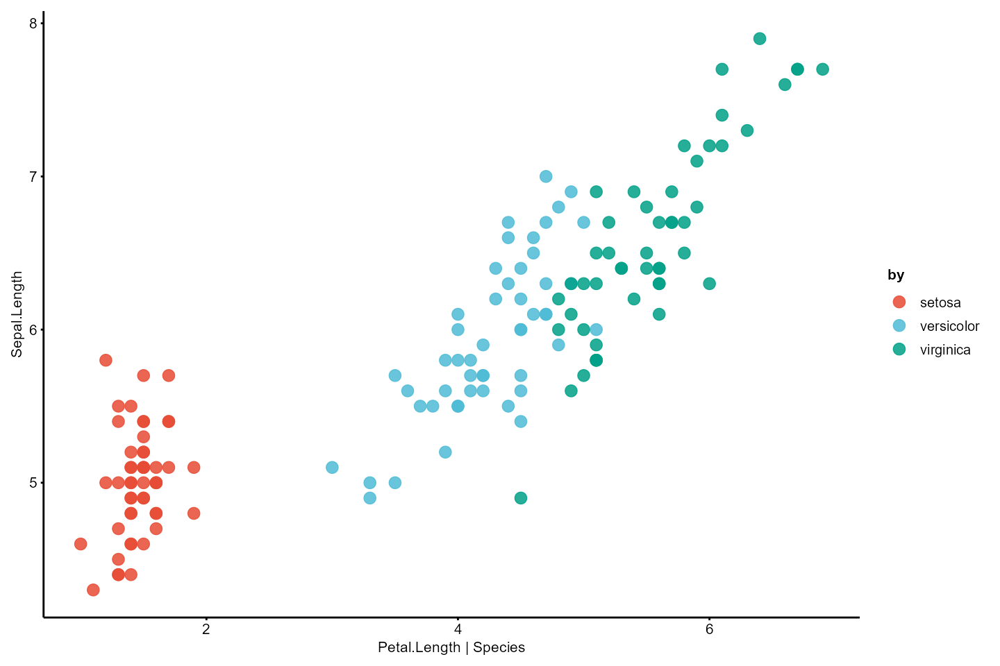
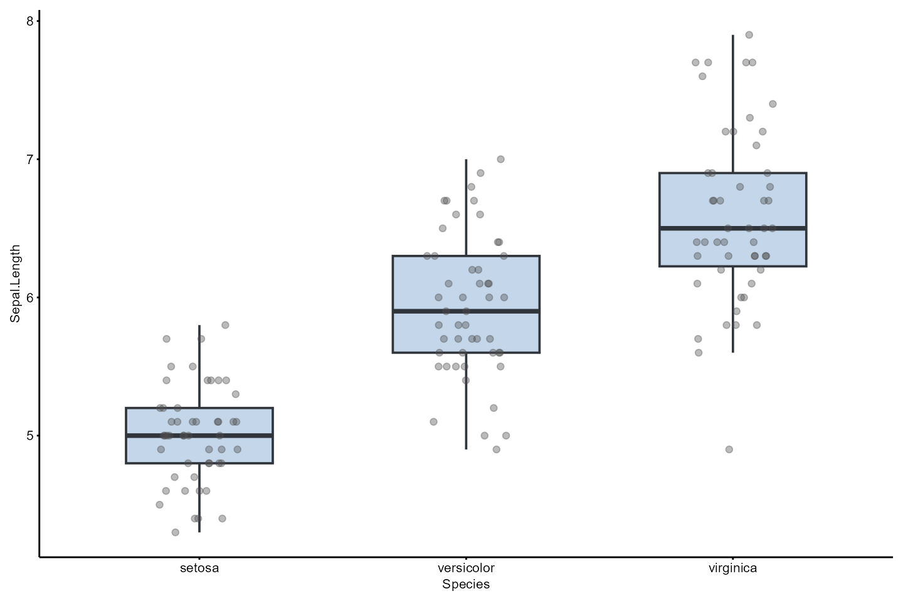
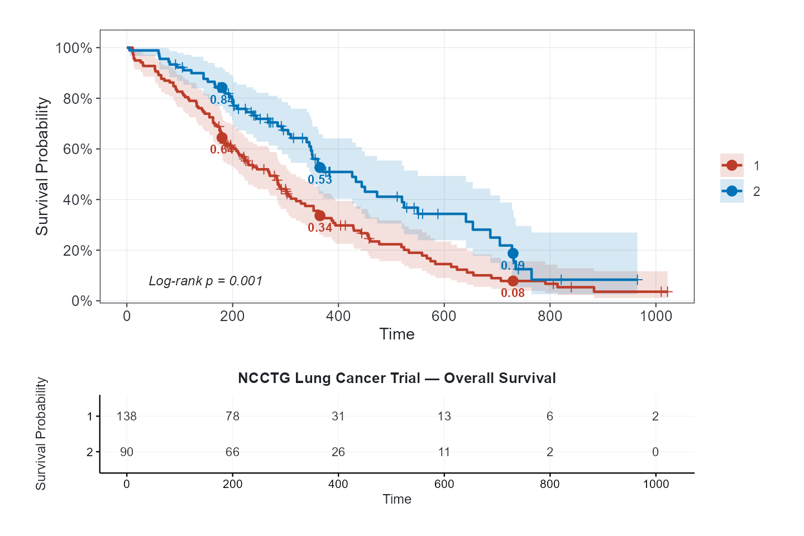
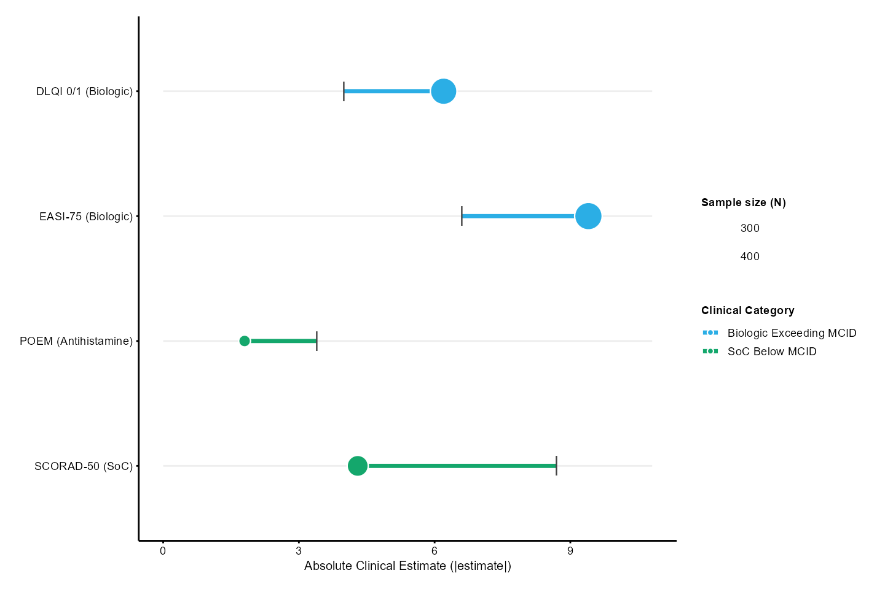
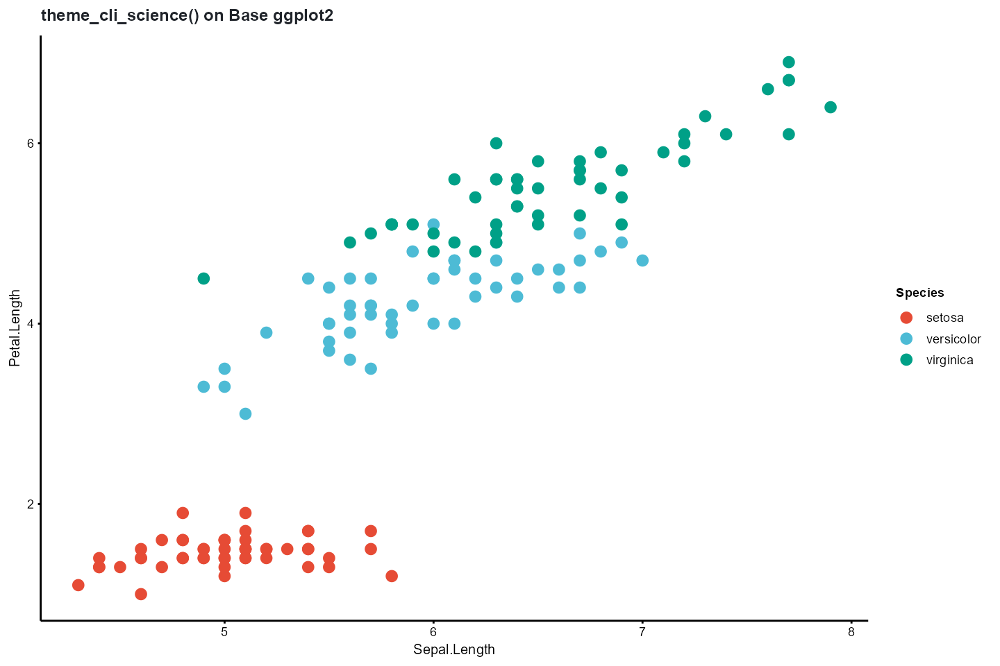
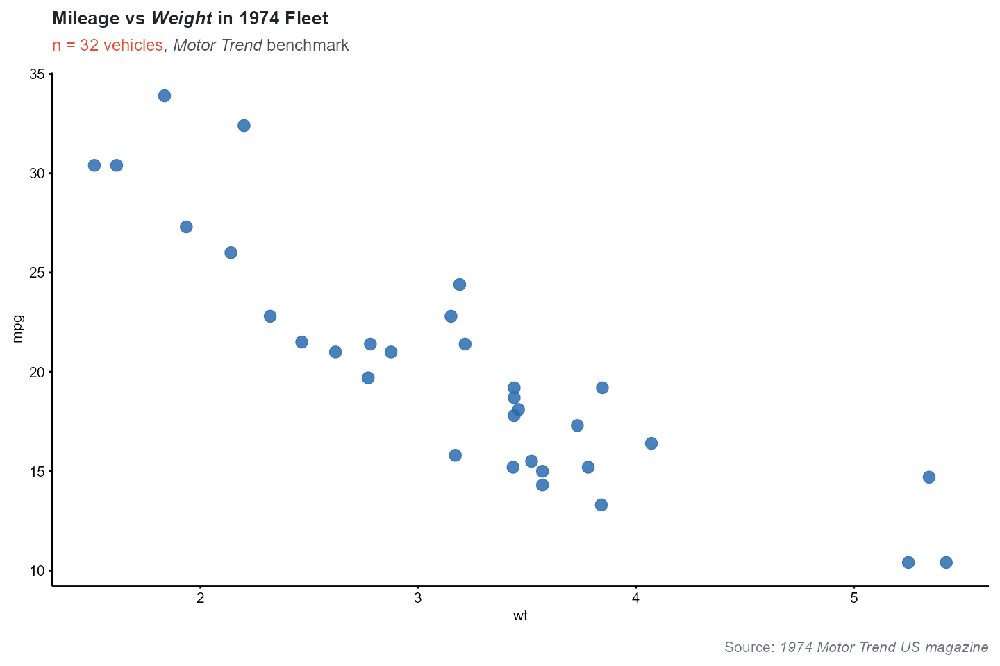
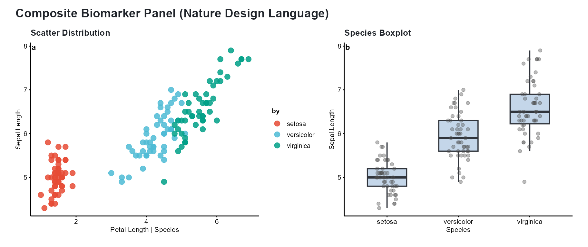

Getting Started with cliomicplot
Lucas VHH Tran
2026-10-17
Source:vignettes/cliomicplot.Rmd
cliomicplot.RmdOverview
cliomicplot is a unified grammar for publication-ready clinical and multi-omics figures built directly on ggplot2. Designed around the visual principles of Nature, Cell, and Science, it offers:
- 55+ specialized plot types spanning clinical trials (Kaplan-Meier milestones, MCID dumbbells, trajectories, swimmers, waterfalls, forest plots) and multi-omics (volcano, GSEA, UpSet, PCA, heatmaps).
-
13 publication themes covering open-axis designs
(
nature,science,cell,nejm,lancet) and full-box Elsevier/IEEE frames (scifig). - 55+ curated color palettes with strict color vision deficiency (CVD) accessibility.
-
Publisher trim sizing
(
cli_journal_size()) for 9 major publishers with vector compliance checks (cli_save()).
1. The Formula Interface: y ~ x | group
cliomicplot provides a clean, expressive formula API:
# Scatter plot with categorical grouping
cliplot(Sepal.Length ~ Petal.Length | Species, data = iris,
palette = "npg", theme = "nature")
The formula syntax automatically manages: - Axis titles formatted from column names - Legend placement, titles, and symbol keys - Palette application with colorblind safety
2. Choosing a Plot Type
Pass type = "..." or a dedicated type_*()
constructor to configure advanced parameters:
Boxplot with Automated Statistical Annotations
cliplot(Sepal.Length ~ Species, data = iris,
type = "boxplot",
stat.test = "kruskal.test",
stat.label = "p.signif",
palette = "jco", theme = "nature")
Supported statistical tests include "t.test",
"wilcox.test", "anova", and
"kruskal.test".
Clinical Figure Archetypes: Kaplan-Meier with Landmark Milestones
In oncology and cardiovascular clinical trials, reporting landmark milestone survival rates (e.g., 1-year and 2-year survival) directly on curves is a premier journal requirement:
library(survival)
cliplot(Surv(time, status) ~ sex, data = lung,
type = type_km(
risk_table = TRUE,
pval = TRUE,
conf_int = TRUE,
milestones = c(180, 365, 730)
),
palette = "nejm", theme = "nejm",
title = "**NCCTG Lung Cancer Trial** — Overall Survival") +
cli_markdown()
Minimal Clinically Important Difference (MCID) Dumbbells
Anchor clinical effect sizes against validated instrument thresholds (Clinical Archetype 1):
mcid_df = data.frame(
Endpoint = c("EASI-75 (Biologic)", "DLQI 0/1 (Biologic)", "SCORAD-50 (SoC)", "POEM (Antihistamine)"),
Estimate = c(9.4, 6.2, 4.3, 1.8),
MCID = c(6.6, 4.0, 8.7, 3.4),
N = c(480, 450, 310, 220),
Category = c("Biologic Exceeding MCID", "Biologic Exceeding MCID",
"SoC Below MCID", "SoC Below MCID")
)
cliplot(Estimate ~ Endpoint, data = mcid_df,
type = type_mcid(mcid = "MCID", n_treated = "N", category = "Category"),
theme = "cell")
3. The 13 Journal Themes
cliomicplot encapsulates distinct journal visual styles:
| Theme | Style | Spines | Grid |
|---|---|---|---|
nature |
Nature Publishing Group | Open (left & bottom) | None |
science |
Science / AAAS | Ultra-clean open | None |
cell |
Cell Press | Structured open | None |
nejm |
New England Journal of Medicine | Open | Subtle horizontal |
lancet |
The Lancet | Open | Subtle horizontal |
scifig / sci_box
|
Elsevier / IEEE / SCI | 4 black spines | Subtle dashed (0.3 pt) |
cli_bw |
Laboratory default | 4 black spines | Full grid |
cli_classic |
Base R style | Left & bottom lines | None |
cli_minimal |
Modern minimal | Borderless | Faint |
broadsheet |
Print newspaper | Subtle border | Horizontal only |
dark |
Presentations / Slides | Dark background | Faint |
showcase |
Posters / Hero figures | Crisp frame | Accent grid |
All themes can be applied ephemerally
(theme = "nature"), globally
(clitheme("nature")), or as standalone ggplot2 functions
(+ theme_cli_nature(),
+ theme_cli_scifig()).
# Use as a standalone ggplot2 theme layer
ggplot(iris, aes(Sepal.Length, Petal.Length, color = Species)) +
geom_point(size = 2.5) +
scale_color_cli("npg") +
theme_cli_science() +
labs(title = "theme_cli_science() on Base ggplot2")
4. Markdown Formatting with cli_markdown()
Render bold, italic, subscripts, superscripts, and hex-colored spans inside plot titles, subtitles, and captions:
cliplot(mpg ~ wt, data = mtcars,
theme = "nature",
title = "**Mileage** vs *Weight* in 1974 Fleet",
subtitle = "<span style='color:#E64B35'>n = 32 vehicles</span>, *Motor Trend* benchmark",
caption = "Source: <i>1974 Motor Trend US magazine</i>") +
cli_markdown()
5. Multi-Panel Composite Assembly
Assemble modular panels with patchwork and label
them with cli_panel_label() conforming to Nature
(a, b) and Cell (A,
B) standards:
p1 <- cliplot(Sepal.Length ~ Petal.Length | Species, data = iris,
palette = "npg", theme = "nature", title = "Scatter Distribution") +
cli_panel_label("a")
p2 <- cliplot(Sepal.Length ~ Species, data = iris,
type = "boxplot", palette = "npg", theme = "nature", title = "Species Boxplot") +
cli_panel_label("b")
p1 + p2 +
plot_annotation(title = "Composite Biomarker Panel (Nature Design Language)")
6. Physical Dimensions & Publication Export
When submitting manuscripts, figure dimensions must strictly match target journal column widths.
cli_journal_size() returns verified millimeter
dimensions across 9 publishers:
# Query Nature and Science column widths
cli_journal_size("nature", "single")$width_mm # 89 mm
#> [1] 89
cli_journal_size("nature", "double")$width_mm # 183 mm
#> [1] 183
cli_journal_size("science", 2)$width_mm # 183 mm
#> [1] 183Export with cli_save() to verify format compliance
(vector PDF/SVG for final submission):
p_final <- p1 + p2
# Vector PDF export for 2-column Nature layout
cli_save(p_final, "Figure_1.pdf", journal = "nature", column = "double")
# Single-column Cell Press SVG export
cli_save(p1, "Figure_1a.svg", journal = "cell", column = "single")Next Steps & Specialized Vignettes
Explore our in-depth guides for specific research workflows:
-
vignette("journal-plots", package = "cliomicplot")— Nature, Cell, and Science design language & clinical archetypes -
vignette("oncology", package = "cliomicplot")— End-to-end clinical oncology analysis (swimmers, waterfalls, KM milestones) -
vignette("multiomics", package = "cliomicplot")— Proteomics, metabolomics, and longitudinal time-courses (xOmicsShiny) -
vignette("themes-palettes", package = "cliomicplot")— The 13 themes and 55+ color palettes in depth -
vignette("volcano-plot", package = "cliomicplot")— Differential expression volcanoes from quick to publication-ready -
vignette("recreate-paper", package = "cliomicplot")— Recreating published multi-panel figures from raw supplementary data